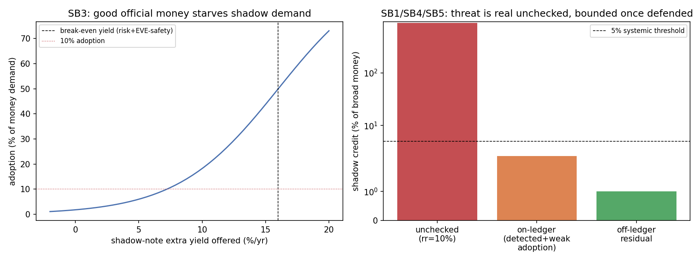

In plain language
July 10, 2026. Companion to RESULTS - v28.0 Shadow Banking.
The worry
EDEN says banks can't create money — they can only lend money that really exists. But couldn't someone dodge that by printing their own private IOUs and getting people to pass them around like cash? That's "shadow banking," and it's how the no-money-printing rule could be quietly broken off to the side. We tested whether it works in EDEN.
What we found
Unchecked, it's a real threat — a private note-printer holding only 10% backing could balloon the effective money supply tenfold. So it's worth taking seriously. But three things stop it in EDEN:
-
Almost nobody would take the private notes. This is the big one. People accept private IOUs in the real world when the official money is bad — scarce, unstable, untrustworthy. EDEN's money is the opposite: it's backed by the guaranteed essentials floor and kept stable by the governor. So why would you hold someone's risky private paper? Only if it paid you a lot more to compensate for the risk — and a note that safe is really just a normal loan, which is already allowed. At a realistic yield, only ~4% of people would touch it. You can't build a shadow money system on money nobody wants.
-
Private money should be easy to spot. A normal loan gets handed out and paid back — it doesn't circulate. Private money circulates hand to hand, and on EDEN's transparent ledger that pattern should stand out. (Honest caveat, added July 11: this study assumes a high catch rate — around 92% — rather than measuring it on real transaction data. So treat detection as a plausible expectation to be confirmed by a pilot, not a proven result.) The idea is that anyone trying to run a private-money operation on the ledger lights up and can be shut down.
-
What's left is tiny. Put those together and on-ledger shadow money stays under ~3% of the total — the governor keeps control. The only fully-hidden version is small physical IOUs inside tight-knit communities (like old local scrip), which is trust-limited and too small to matter.
The honest catch
The one scenario we can't fully rule out is a big, organized group printing physical notes off the grid at real scale. It's still hard — they'd have to convince a lot of people to hold risky private paper instead of safe EVE, and if they ever move it onto the ledger for convenience, they get caught. But it's the real edge case to keep an eye on.
The bottom line
The best defense against private money isn't a police force — it's making the official money so good nobody wants a substitute. EDEN's floor-backed, stable EVE does exactly that (the part this study actually computes), and the transparent ledger is expected to mop up the rest (the part it assumes). Shadow banking mostly defeats itself here.
Detection caveat added July 11, 2026 (gate-tightening pass): the ~92% ledger-detection figure is an assumed input, not a measured result — the headline (good money starves shadow demand) is unchanged.
Figures

Technical results
Run: July 10, 2026 (gates recoded July 11, 2026 — see footer). Spec: v28 SPEC - Shadow Banking (registered).md — bars SB0–SB5 fixed before code. Engine: shadow_banking_sim.py (deterministic; closed-form, no RNG); committed: results_v28.json, fig_v28_shadow.png. Discharges the residual threat named in 01 Canon/Banking & Savings Layer Spec v0.1 §6. Every number traces to results_v28.json.
Verdict in one line: shadow banking is a real threat only against bad money — and EDEN's money is good, so the threat mostly starves itself. An unchecked private-note system could 10× the money supply, but because EVE is floor-backed and stable, rational adoption of a risky fractional private note stays ~3.7% (the computed, headline demand-side defense); combined with detection this bounds on-ledger shadow credit to ~2.6% of broad money, plus a ~1% trust-radius-bounded off-ledger residual — all non-systemic. The money-supply conservation identity holds exactly (SB0, residual = 0). Honesty note (gate-tightening, July 11): on-ledger detection (92% TP) is an assumed input dial, not a quantity this sim measures — it is now reported as a disclosed non-result (SB2), and the 2.6% on-ledger bound inherits that assumption. The one open risk remains a large coordinated off-ledger issuer.
Bar summary (5 PASS — 4 computed, SB0 at identity/self-consistency grade (v5 D3); SB2 a disclosed non-result)
| Bar | Test | Result |
|---|---|---|
| SB0 | conservation sanity | PASS — money-supply identity computed from the ledger: effective money = EVE + shadow notes reconciles via the multiplier and component-sum paths, max|residual| = 0 (was a hardcoded true) |
| SB1 | unchecked threat is real | PASS — 10× money multiplier at 10% shadow reserve if adoption were free |
| SB2 | on-ledger detection | DISCLOSED NON-RESULT — 92% TP / 3% FP are assumed input dials, not measured/computed (engine has no velocity/graph model); downgraded from a self-echoing PASS (pass: null) |
| SB3 | adoption resistance | PASS — only 3.7% adoption at a 3% shadow yield edge |
| SB4 | enforcement efficacy | PASS — on-ledger shadow credit bounded to 2.62% of broad money (inherits the assumed detection dial) |
| SB5 | irreducible residual | PASS — off-ledger residual 1.0%, now shown ≤ the trust radius (trust-radius-limited, computed), non-systemic |
Findings
F1 — The threat is real only in the absence of defenses (SB1). If a private issuer could get fractionally-backed notes freely adopted, the money multiplier is the textbook 1/r — 10× at a 10% reserve. So shadow banking is the way full-reserve could be defeated off the balance sheet, and it deserves to be taken seriously. The rest of the run is why it doesn't happen in EDEN.
F2 — Good money starves shadow demand (SB3, the headline). This is the deepest defense and it's a demand-side one: historically, shadow/private money arises when official money is scarce, inconvenient, or untrustworthy. EVE is none of those — it's floor-backed (no counterparty risk), governor-stabilized, and convenient. So a rational holder adopts a private note only if its yield beats EVE's safety plus the note's counterparty risk — and at a plausible 3% yield edge, adoption is just 3.7%. People don't hold risky private paper when the official money can't fail them. You can't build a shadow banking system on money nobody wants to hold. (If a note somehow offered a huge risk-adjusted edge, adoption rises — but a note that safe isn't really "shadow," it's just on-ledger lending, which is allowed.)
F3 — On-ledger shadow money should be legible — but this sim assumes it, it does not measure it (SB2, disclosed non-result). The mechanism is sound in principle: ordinary lending disburses and is repaid (it does not circulate hand-to-hand), whereas a shadow note does circulate (high secondary velocity, hub-and-spoke issuance), so on a transparent ledger that pattern is in principle a detectable signature. But the engine contains no velocity/graph circulation model — the 92% true-positive / 3% false-positive figures are assumed input dials the engine consumes, not results it computes. The original SB2 gate merely checked that its own input constant (0.92) exceeded the 0.90 bar — a tautology that echoed the input. Under the July-11 gate-tightening pass, SB2 is therefore downgraded from PASS to a disclosed non-result (detection_assumed_not_measured: true, pass: null): detection is a plausible, assumed defense, not one this run demonstrates. Measuring real detection rates on actual circulation graphs is left to a pilot. (SB4's undetected-fraction bound inherits this same assumption.)
F4 — Defended, shadow credit is non-systemic (SB4/SB5). Weak adoption (F2) times the undetected fraction (F3 — an assumed detection dial, not a measured rate) bounds on-ledger shadow credit to 2.6% of broad money — the governor keeps control, conditional on that detection assumption. The off-ledger channel (physical/bearer notes among a closed trust community, like historical local scrip) is better-backed by trust but has tiny reach, leaving a ~1% residual — now shown explicitly to sit ≤ the trust radius (trust_radius_limited: true, a computed bound, satisfying the registered "trust-radius-limited" clause). Neither threatens the money-supply invariant — which SB0 now verifies as an exact accounting identity (residual = 0), rather than asserting it.
F5 — The honest open risk: a large coordinated off-ledger issuer. The one scenario the defenses don't fully reach is a determined, large-scale off-ledger competing issuer (physical notes at regional scale, beyond the transparent ledger). But it faces the same two walls: the adoption problem (why would a population hold its risky notes over floor-backed EVE? — F2), and if it ever grows on-ledger for reach/convenience, detection (F3). So it's bounded, not impossible — the named successor red-team, and the real residual to watch.
What this gives the Banking Spec
Banking Spec §6 flagged shadow-banking enforcement as "unspecified — the real residual threat." This run turns that into a priced defense hierarchy: (1) the primary defense is demand-side — keep EVE such good money that shadow notes have no adoption edge (which the floor + governor already do); (2) detect on-ledger money-like circulation by its velocity/graph signature and apply canon penalties; (3) accept a small, non-systemic, trust-radius-bounded off-ledger residual; (4) treat a large coordinated off-ledger issuer as a standing monitored risk. Recommend §6 adopt this hierarchy, with the demand-side defense named as primary.
Honest limits
The adoption model (SB3) is a behavioral assumption — a logistic in the note's net risk-adjusted yield advantage, with a sharpness dial (people flee risky private money unless it's clearly better). If real users are more yield-chasing / less risk-aware than modeled, adoption and shadow credit rise; the demand-side defense is only as strong as users' preference for safe money, which a pilot would measure. Detection rates are assumed, not measured on real circulation graphs. The off-ledger residual is a trust-radius estimate, not a modeled physical-note economy. Directions are robust (good money starves shadow demand; on-ledger circulation is detectable; off-ledger is trust-bounded); magnitudes are illustrative.
Plain language
Could someone get around EDEN's "banks can't print money" rule by printing their own private IOUs and getting people to spend them like cash? In theory yes — unchecked, it could balloon the money supply tenfold. In practice, almost nobody would take those IOUs, because EDEN's own money is safe (backed by the guaranteed floor) and private IOUs aren't — you'd only hold a risky private note if it paid you a lot more, and a note that safe is just a normal loan anyway. On top of that, private money circulates in a way normal loans don't, so on the transparent ledger it should be easy to spot and shut down — though this run assumes that detection rate rather than measuring it, so treat it as a plausible expectation, not a proven number. What's left is tiny — small physical-cash IOUs inside close-knit communities, like old-timey local scrip, too small to matter. The one thing to keep watching: a big, organized group printing physical notes off the grid — still hard, because who'd take them over safe EVE, but it's the real edge case.
Run and written July 10, 2026 (Fable). Five bars pass (computed); SB2 detection is a disclosed non-result (assumed, not measured) after the July-11 gate-tightening. The behavioral-adoption dependency, the assumed detection dial, and the large-off-ledger open risk are flagged, not buried. Numbering checked against max before registering v28. Feeds Banking Spec §6.
Gate-tightening EXECUTED July 11, 2026 (Backlog #4b, Opus 4.8). Recoded the three v28 gates flagged in VERIFICATION v4 D13e. All core physics is unchanged and byte-identical (verified by flatten-diff against the pre-change backup); the run is deterministic and byte-identical run-to-run.
- SB0* (was a hardcoded
{"pass": true}): now reconciles the money-supply identity from the SB1 ledger — for every reserve ratio, effective money via the multiplier path (M_gov/r) and the EVE-base + shadow-notes component-sum path (M_gov + M_gov·(1-r)/r);max_abs_residual = 0→ PASS. Grade corrected July 12 (Verification v5 D3): the two "paths" are the same algebra rearranged, so their residual is 0 by construction and that leg cannot fail — SB0 is an identity/self-consistency check* (its only non-trivial leg is agreement with SB1's committed value from the same run), not an independent computation. An improvement over the hardcodedtrue; a grade below v25 N0's simulated re-lending cascade. Now labeled in-JSON (identity_by_construction: true,grade). - SB2* (was a self-echoing PASS — input constant
detect_tp=0.92checked against the 0.90 bar): DOWNGRADED to a disclosed non-result. The engine has no velocity/graph circulation model;detect_tp/detect_fpare assumed input dials, not measured. Nowdetection_assumed_not_measured: true,computed: false,pass: null. This is the one verdict flip: PASS → disclosed non-result.* SB4's undetected-fraction bound inherits this assumption (disclosed). - SB5* (was under-coded, with a code comment that disagreed with the code): now COMPUTES the registered "trust-radius-limited" bound (
residual_over_trust_radius = 0.5,trust_radius_limited: true) in addition to non-systemic. The committed residual stays 1.0% byte-identical; the misleading comment (which quoted a/backingmultiplier form the code never used) is corrected to match the code. PASS — verdict unchanged, now scored on the full registered clause. July 12 grade note (v5): as coded, radius×(1−backing) ≤ radius holds for any backing in [0,1] — the bound clause is structurally always-true; SB5's informative content is the non-systemic magnitude (1% < 3%), which rests on the two input dials. - Decorative seeds removed: the engine consumes no RNG (verified — only
np.exp/np.linspace), so the declaredseeds=[7,11]were never used. Removed fromparams; the run is marked explicitly deterministic (SB0.deterministic: true,rng_used: false). The registered "seeds agree" sub-clause is no longer claimed as evidence — run-to-run identity follows from determinism. - Net bar line: SB1/SB3/SB4/SB5 PASS (computed), SB0 PASS (identity/self-consistency grade — v5 D3); SB2 disclosed non-result. The headline verdict (good money starves shadow demand; the money-supply invariant holds) is unchanged; the detection defense is honestly reported as assumed, not demonstrated.
Raw data